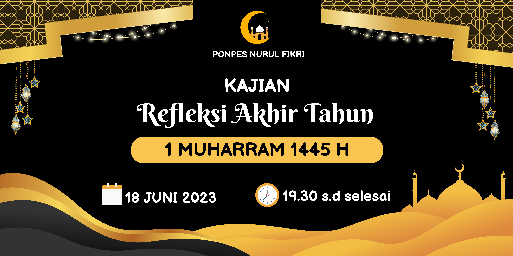
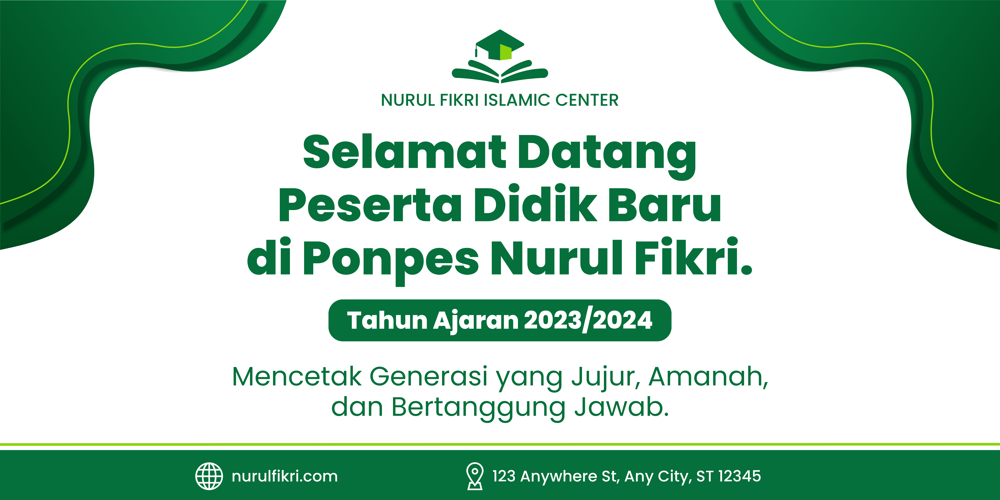

Sebuah tempat yang dipersembahkan untuk menciptakan lingkungan edukatif dan spiritual yang penuh berkah. Di sini, kami membuka pintu bagi Anda untuk menjelajahi perjalanan ilmu, iman, dan amal, di tengah atmosfer yang penuh dengan kearifan dan keberkahan. Pesantren Al-Hikmah bukan sekadar tempat untuk memperdalam pengetahuan agama, tetapi juga sebagai wadah untuk membangun karakter dan kepribadian yang kokoh. Kami percaya bahwa pendidikan tidak hanya tentang memahami teks-teks suci, tetapi juga tentang menerapkan nilai-nilai luhur dalam kehidupan sehari-hari.
Pondok Pesantren Nurul Fikri adalah sebuah lembaga pendidikan Islam yang menjadi cahaya pencerahan bagi para santri yang mencari ilmu dan keberkahan. Terletak di lingkungan yang teduh dan penuh kedamaian, pondok pesantren ini bukan sekadar tempat belajar, melainkan juga sebuah rumah bagi para pencari ilmu. Dengan fondasi kuat dalam ajaran Islam, Pondok Pesantren Nurul Fikri menjembatani perjalanan spiritual dan intelektual para santri. Di sini, tidak hanya dipelajari teks-teks suci, tetapi juga nilai-nilai kehidupan yang luhur. Setiap langkah yang diambil di pondok pesantren ini membawa sinar kearifan dan keberkahan.
"Pondok Pesantren Nurul Fikri merangkul visi sebagai pusat pendidikan Islam yang terkemuka dan inklusif, yang mewujudkan transformasi holistik pada setiap insan, menginspirasi keunggulan akademis, moral, dan kreatif, serta menjadi motor penggerak perubahan positif dalam masyarakat. Dengan penuh semangat dan kearifan, kami berkomitmen untuk menciptakan lingkungan pembelajaran yang dinamis, memelihara keberagaman, dan memberdayakan setiap individu untuk mencapai potensinya secara maksimal."
Pondok Pesantren Nurul Fikri didirikan atas inisiatif para ulama dan tokoh masyarakat yang memiliki kepedulian terhadap masa depan umat Islam. Pendirian pondok pesantren ini bertujuan untuk menjawab tantangan zaman modern dengan mengintegrasikan nilai-nilai Islam dalam pendidikan formal dan informal. Hal ini dilakukan dengan keyakinan bahwa pendidikan yang kokoh dalam nilai-nilai agama akan membentuk generasi yang tangguh, bertanggung jawab, dan mampu memberikan kontribusi positif bagi masyarakat dan negara.
Pengambilan Gambar Acara Pelepasan sekaligus Penerimaan Santri baru Tahun 2023/2024 di Pondok Pesantren Nurul Fikri Malang
Pengambilan Gambar Para Ustad dan Guru yang Mengajar di Pondok Pesantren Nurul Fikri Lampung
Pengambilan Gambar Gedung Pondok Pesantren Nurul Fikri yang Berada di Jawa Timur tepatnya di Ponorogo